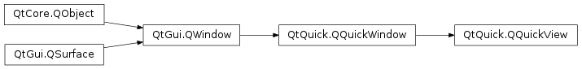

QQuickView¶
Synopsis¶
Functions¶
- def
engine() - def
errors() - def
initialSize() - def
resizeMode() - def
rootContext() - def
rootObject() - def
setResizeMode(arg__1) - def
sizeHint() - def
source() - def
status()
Slots¶
- def
setContent(url, component, item) - def
setSource(arg__1)
Signals¶
- def
statusChanged(arg__1)
Detailed Description¶
The
PySide2.QtQuick.QQuickViewclass provides a window for displaying a Qt Quick user interface.This is a convenience subclass of
PySide2.QtQuick.QQuickWindowwhich will automatically load and display a QML scene when given the URL of the main source file. Alternatively, you can instantiate your own objects using QQmlComponent and place them in a manually setupPySide2.QtQuick.QQuickWindow.Typical usage:
QQuickView *view = new QQuickView; view->setSource(QUrl::fromLocalFile("myqmlfile.qml")); view->show();To receive errors related to loading and executing QML with
PySide2.QtQuick.QQuickView, you can connect to thePySide2.QtQuick.QQuickView.statusChanged()signal and monitor forQQuickView.Error. The errors are available viaQQuickView.errors().
PySide2.QtQuick.QQuickViewalso manages sizing of the view and root object. By default, thePySide2.QtQuick.QQuickView.resizeMode()isSizeViewToRootObject, which will load the component and resize it to the size of the view. Alternatively thePySide2.QtQuick.QQuickView.resizeMode()may be set toSizeRootObjectToViewwhich will resize the view to the size of the root object.See also
-
class
PySide2.QtQuick.QQuickView(engine, parent)¶ -
class
PySide2.QtQuick.QQuickView([parent=nullptr]) -
class
PySide2.QtQuick.QQuickView(source, renderControl) -
class
PySide2.QtQuick.QQuickView(source[, parent=nullptr]) Parameters: - source –
PySide2.QtCore.QUrl - renderControl –
PySide2.QtQuick.QQuickRenderControl - engine –
PySide2.QtQml.QQmlEngine - parent –
PySide2.QtGui.QWindow
Constructs a
PySide2.QtQuick.QQuickViewwith the given QMLengineandparent.Note: In this case, the
PySide2.QtQuick.QQuickViewdoes not own the givenengineobject; it is the caller’s responsibility to destroy the engine. If theengineis deleted before the view,PySide2.QtQuick.QQuickView.status()will returnQQuickView.Error.See also
QQuickView.StatusPySide2.QtQuick.QQuickView.status()PySide2.QtQuick.QQuickView.errors()Constructs a
PySide2.QtQuick.QQuickViewwith the givenparent. The default value ofparentis 0.Constructs a
PySide2.QtQuick.QQuickViewwith the given QMLsourceandparent. The default value ofparentis 0.- source –
-
PySide2.QtQuick.QQuickView.ResizeMode¶ This enum specifies how to resize the view.
Constant Description QQuickView.SizeViewToRootObject The view resizes with the root item in the QML. QQuickView.SizeRootObjectToView The view will automatically resize the root item to the size of the view.
-
PySide2.QtQuick.QQuickView.Status¶ Specifies the loading status of the
PySide2.QtQuick.QQuickView.Constant Description QQuickView.Null This PySide2.QtQuick.QQuickViewhas no source set.QQuickView.Ready This PySide2.QtQuick.QQuickViewhas loaded and created the QML component.QQuickView.Loading This PySide2.QtQuick.QQuickViewis loading network data.QQuickView.Error One or more errors has occurred. Call PySide2.QtQuick.QQuickView.errors()to retrieve a list of errors.
-
PySide2.QtQuick.QQuickView.engine()¶ Return type: PySide2.QtQml.QQmlEngineReturns a pointer to the QQmlEngine used for instantiating QML Components.
-
PySide2.QtQuick.QQuickView.errors()¶ Return type: Return the list of errors that occurred during the last compile or create operation. When the status is not Error, an empty list is returned.
-
PySide2.QtQuick.QQuickView.initialSize()¶ Return type: PySide2.QtCore.QSizeReturns the initial size of the root object.
If
PySide2.QtQuick.QQuickView.resizeMode()is QQuickItem::SizeRootObjectToView the root object will be resized to the size of the view. contains the size of the root object before it was resized.
-
PySide2.QtQuick.QQuickView.resizeMode()¶ Return type: PySide2.QtQuick.QQuickView.ResizeMode
-
PySide2.QtQuick.QQuickView.rootContext()¶ Return type: PySide2.QtQml.QQmlContextThis function returns the root of the context hierarchy. Each QML component is instantiated in a QQmlContext. QQmlContext’s are essential for passing data to QML components. In QML, contexts are arranged hierarchically and this hierarchy is managed by the QQmlEngine.
-
PySide2.QtQuick.QQuickView.rootObject()¶ Return type: PySide2.QtQuick.QQuickItemReturns the view’s root
item.
-
PySide2.QtQuick.QQuickView.setContent(url, component, item)¶ Parameters: - url –
PySide2.QtCore.QUrl - component –
PySide2.QtQml.QQmlComponent - item –
PySide2.QtCore.QObject
Set the source
url,componentand contentitem(root of the QML object hierarchy) directly.- url –
-
PySide2.QtQuick.QQuickView.setResizeMode(arg__1)¶ Parameters: arg__1 – PySide2.QtQuick.QQuickView.ResizeMode
-
PySide2.QtQuick.QQuickView.setSource(arg__1)¶ Parameters: arg__1 – PySide2.QtCore.QUrlSets the source to the
url, loads the QML component and instantiates it.Ensure that the URL provided is full and correct, in particular, use
QUrl.fromLocalFile()when loading a file from the local filesystem.Calling this method multiple times with the same url will result in the QML component being reinstantiated.
See also
-
PySide2.QtQuick.QQuickView.sizeHint()¶ Return type: PySide2.QtCore.QSizePreferred size follows the root object geometry.
-
PySide2.QtQuick.QQuickView.source()¶ Return type: PySide2.QtCore.QUrlReturns the source URL, if set.
-
PySide2.QtQuick.QQuickView.status()¶ Return type: PySide2.QtQuick.QQuickView.Status
-
PySide2.QtQuick.QQuickView.statusChanged(arg__1)¶ Parameters: arg__1 – PySide2.QtQuick.QQuickView.Status
© 2018 The Qt Company Ltd. Documentation contributions included herein are the copyrights of their respective owners. The documentation provided herein is licensed under the terms of the GNU Free Documentation License version 1.3 as published by the Free Software Foundation. Qt and respective logos are trademarks of The Qt Company Ltd. in Finland and/or other countries worldwide. All other trademarks are property of their respective owners.